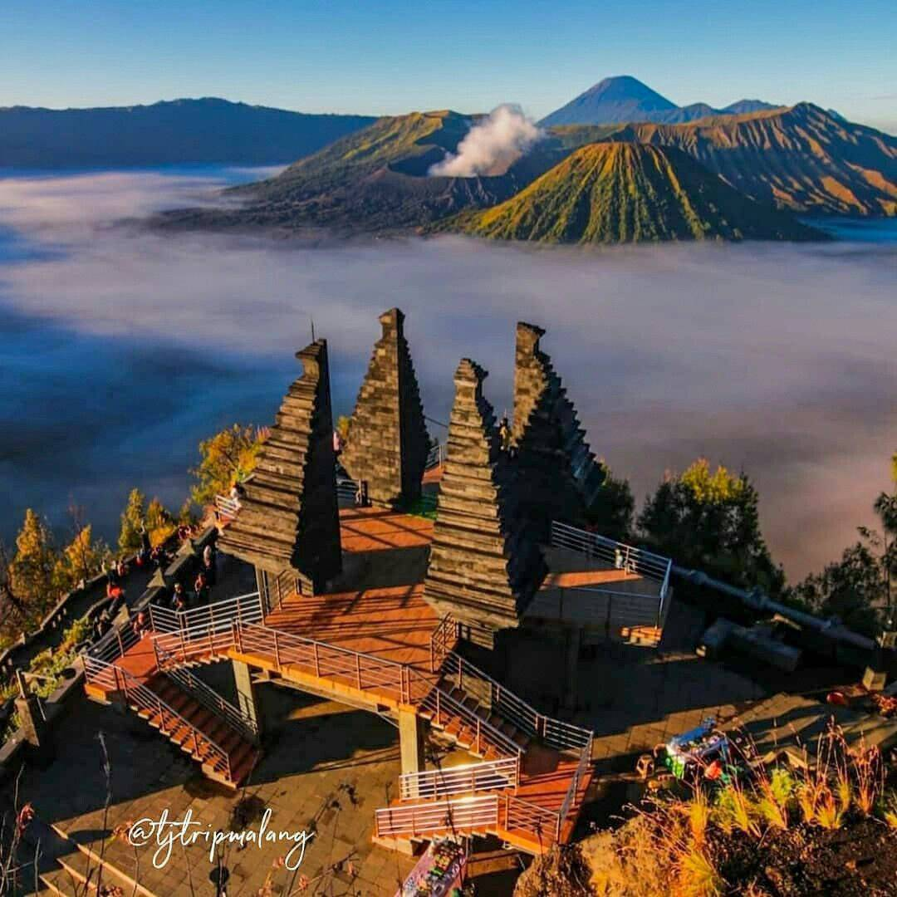

About Bromo

Gunung Bromo (dari bahasa Sanskerta: Brahma, salah seorang Dewa Utama dalam agama Hindu) atau dalam bahasa Tengger dieja "Brama", adalah sebuah gunung berapi aktif di Jawa Timur, Indonesia. Gunung ini memiliki ketinggian 2.329 meter di atas permukaan laut dan berada dalam empat wilayah kabupaten, yakni Kabupaten Probolinggo, Kabupaten Pasuruan, Kabupaten Lumajang, dan Kabupaten Malang. Gunung Bromo terkenal sebagai objek wisata utama di Jawa Timur. Sebagai sebuah objek wisata, Bromo menjadi menarik karena statusnya sebagai gunung berapi yang masih aktif. Gunung Bromo termasuk dalam kawasan Taman Nasional Bromo Tengger Semeru.